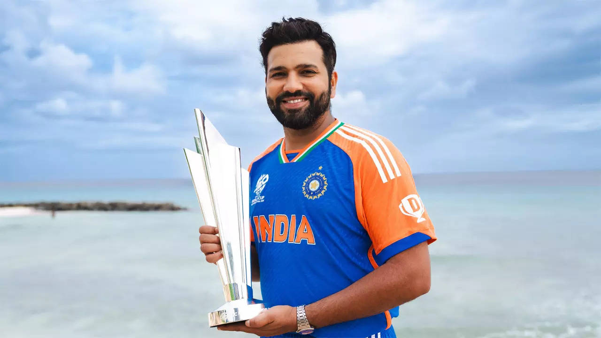

Rohit Sharma (born 30 April 1987) is an Indian international cricketer who currently plays for and captains the India national cricket team in Test and One Day International (ODI) matches. Previously, he also captained the team in Twenty20 International (T20I) matches and led India's win in 2024 ICC Men's T20 World Cup, subsequent to which he retired from T20s in June 2024. He is considered to be one of the best batsmen of his generation and one of the greatest opening batters of all time, He is also known as Hitman for his timing, elegance, six-hitting abilities and leadership skills. On 3rd November of 2024, he became the only Indian captain to get whitewashed at home in a 3 match Test Series.
He holds several batting records which famously include most runs in T20 Internationals, most sixes in international cricket,[a] most double centuries in ODI cricket (3), most centuries at Cricket World Cups (7) and joint most hundreds in Twenty20 Internationals (5). He is the first player to score 5 T20I centuries. He also holds the world record for the highest individual score (264) in a One Day International (ODI) match and is the only player to have scored three double-centuries in ODIs and also holds the record for scoring most hundreds (five) in a single Cricket World Cup, for which he won the ICC Men's ODI Cricketer of the Year award in 2019. He is the only player to win 50 matches as captain in T20Is. wikipedia